Legenda
Typologia gleb:
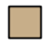
- czarne ziemie typowe
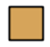
- czarne ziemie z poziomem cambic
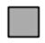
- gruntowo-glejowe
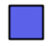
- płowe gruntowo-glejowe
Uziarnienie:
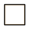
- brak uziarnienia
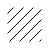
- glin piaszczystych i pyłów gliniastych
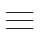
- piasków gliniastych i piasków luŸnych pylastych
Cechy szczególne:
- węglanowe
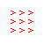
- warstwa silnie skonsolidowana na gł. 50-80cm
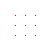
- wyługowane
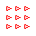
- węglanowe z poziomem ochric
Inne:
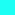
- odkrywki glebowe